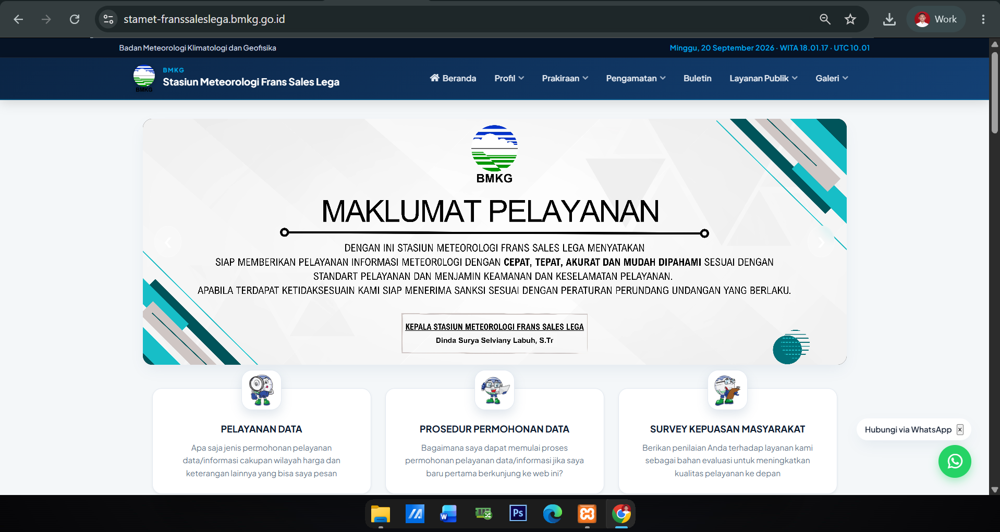
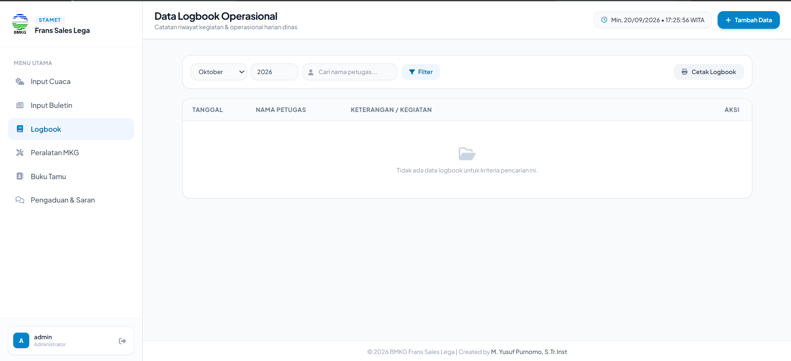

Fokus pada kecepatan akses, keamanan data, optimasi mesin pencari (SEO), dan antarmuka pengguna yang intuitif. Membangun sistem yang stabil untuk instansi pemerintah maupun bisnis/UMKM.
Lulusan D-IV Instrumentasi-MKG (STMKG) • PNS Stasiun Meteorologi Kelas II Frans Sales Lega
Berbekal latar belakang pendidikan D-IV Instrumentasi-MKG di STMKG serta pengalaman aktif membuat dan mengelola infrastruktur web Stasiun Meteorologi Frans Sales Lega, saya menghadirkan layanan web profesional yang tidak hanya menarik secara visual, tetapi juga kokoh secara arsitektur data, cepat, dan patuh pada standar keamanan siber.
Pengerjaan mematuhi OWASP Secure Coding Guidelines & standar performa mesin pencari Google.
Konsultasi LangsungProyek Terbaru yang Berhasil Di-deploy
Portal Informasi Publik & Sistem Dashboard Internal Admin.
Pengembangan portal informasi cuaca dan maritim realtime berkinerja tinggi. Dirancang khusus dengan arsitektur siber berlapis untuk menjamin ketersediaan layanan publik 24/7 tanpa gangguan.


Sistem manajemen data internal pegawai untuk pencatatan logbook operasional harian dinas, manajemen inventaris peralatan MKG, upload buletin PDF, dan buku tamu digital.
Setiap sistem dikembangkan menerapkan standar keamanan ketat. Proyek portal Stamet Frans Sales Lega telah melalui pengujian audit kerentanan resmi oleh tim Siber CSIRT BMKG Pusat dengan hasil bebas dari celah keamanan berisiko.
"Tidak ditemukan kerentanan pada Web Stasiun Meteorologi Frans Sales Lega, sehingga dikategorikan sebagai sistem aplikasi/server dengan tingkat Low Risk Severity."
Solusi yang Kami Kerjakan
Website representatif dengan tata letak rapi, cepat diakses dari perangkat seluler, serta mudah dikelola oleh admin internal.
Pembangunan aplikasi web kustom menggunakan Laravel, integrasi REST API, sistem logbook, serta dashboard manajemen data.
Audit Google PageSpeed, pendaftaran Google Search Console, pemasangan Schema JSON-LD, serta konfigurasi Nginx/aaPanel.
Paket Pengembangan Web
Untuk UMKM atau profil usaha dasar.
Untuk instansi, sekolah, dll.
Mulai dari :
Sistem aplikasi kompleks skala besar.